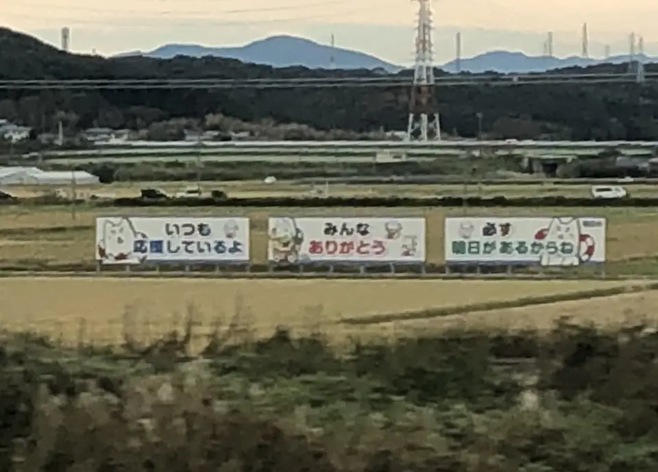

TOKAIDO SHINKANSEN WINDOW VIEW
しっぺいの応援看板はいつ見える？座席側は？
元気が出る三連看板。

- 見える区間
- 掛川 → 浜松（磐田付近）
- 座席側
- E席・山側
- タイミング
- 東京発のぞみ基準で約64分後
- 写真
- 2 枚
しっぺいの応援看板の見つけ方
掛川を過ぎて浜松へ向かう途中、ハウス食品静岡工場を過ぎて少ししたあたりのE席側に、磐田市のキャラクター・しっぺいが描かれた三連続の応援看板が並びます。「いつも 応援してるよ」「みんな ありがとう」「必ず 明日があるからね」。車窓で見かけて気になった人も多いかもしれません。周囲に大きな目印が少なく、Google Mapsでも探しにくい場所なので、下の地図も参考にしてください。
もっと見る: しっぺいの公式サイトを見る看板付近をストリートビューで見る@letus10: しっぺいの応援看板車窓記事
東京から新大阪方面へ向かう場合は、掛川 → 浜松（磐田付近）が近づいたらE席・山側の窓を少し早めに見てください。新大阪から東京方面へ向かう場合は、通過順が逆になります。
位置の目安
地図をひらくスポット位置と、新幹線から見る位置を切り替えられます。
しっぺいの応援看板を見逃さないコツ
1. 先に見る方向を決める
掛川 → 浜松（磐田付近）が近づいたら、E席・山側の窓を先に意識してください。現在地から追う場合はライブガイド、事前に確認する場合はこのページの地図が役立ちます。
はっきり見えるのは数秒ほど。案内が出てからカメラを探すより、先に座席側と窓の方向を決めておくと拾いやすくなります。
2. 見どころ
しっぺいの応援看板は、富士山や大きな城のような主役級ではなく、知っている人だけが拾えるタイプの車窓です。見つけること自体が楽しいので、旅慣れた人ほど小さな発見として効いてきます。
写真で見るしっぺいの応援看板

 関連
豊橋の立岩
関連
豊橋の立岩
 関連
セロテープの壁看板
関連
セロテープの壁看板
 関連
727看板と248看板
関連
727看板と248看板